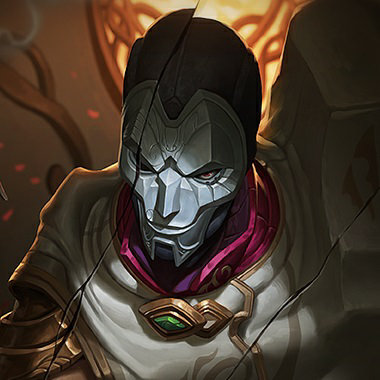

원딜 / 난이도: 보통
진은 살인이 예술이라고 믿는 주도면밀한 사이코패스 살인범이다. 원래는 아이오니아의 감옥에 수감되어 있었는데, 아이오니아 평의회 내에서 암약하는 어두운 세력의 힘으로 풀려난 이후 그 파벌의 자객으로 일하고 있다. 진은 총을 붓 삼아 잔혹한 그림을 그리는 화가이자, 소름끼치는 작품을 무대에 올리며 쾌락을 느끼는 극작가다. 그 솜씨를 접하는 피해자와 목격자들은 모두 얼어붙을 수밖에 없다. 누군가에게 '공포'라는 강렬한 메시지를 전하고 싶다면, 진이야말로 그 일을 맡길 최고의 적임자일 것이다.